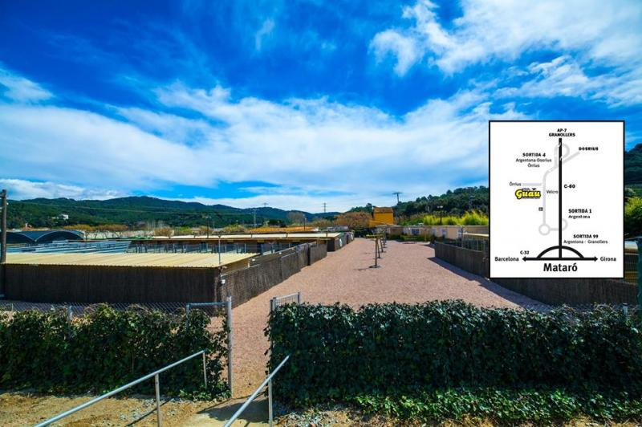

EL REFUGIO, MADRID
El refugio, es una protectora situada en Madrid, especializada en la ayuda a perros y gatos abandonados y/o maltratados denunciamos judicialmente a los maltratadores y buscamos adoptantes para todos los animales que acogemos.

GALGO ESPAÑOL
Galgo español comenzó en 2012, se unieron para poder cambiar la vida de los Galgos rescatan, rehabilitan, y encuentran hogar a tantos galgos como les pueden permitir, recogen galgos en temporada de caza .
HELP GUAU
La protectora Help Guau proporciona bienestar tanto fisico como psicologico a los animales del centro está situada en Barcelona, prestan servicio las 24 horas del dia.
PROPATAS
Propatas es una Asociacion, que lleva luchando desde el 2009, con el tiempo se fueron fundando las casas de acogida y pudieron ayudar a muchos de los animales que les iban trayendo.
PETJADESTROBADES
petjadestrobades es un refugio de animales situado en Valencia, llevan activos desde 2018 es una Asociacion formado por tres personas donde protegen, cuidan, y rescatan animales.